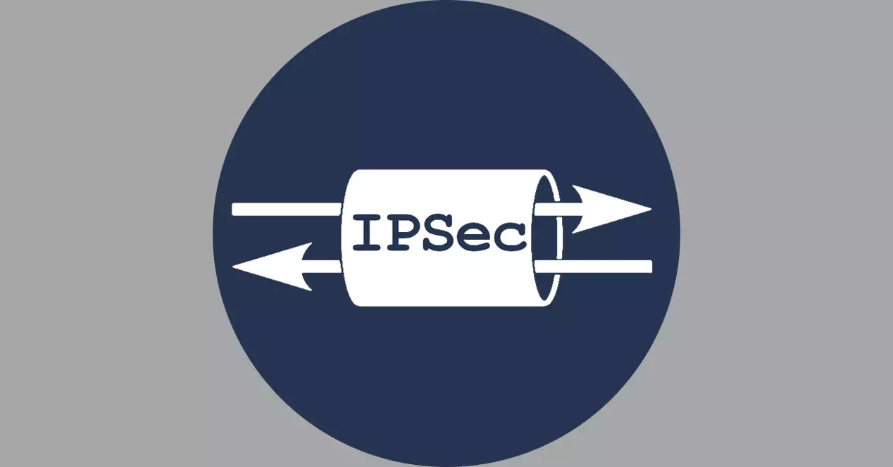
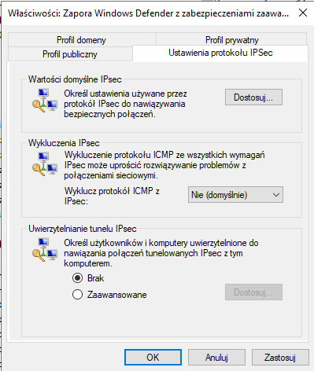

Protokół IPSec
IPSec (ang. Internet Protocol Security) to zestaw protokołów, pozwalający na zestawienie bezpiecznego szyfrowanego tunelu pomiędzy dwoma urządzeniami sieciowymi
za pośrednictwem internetu.
Zapewnia on uwierzytelnianie stron biorących udział w zestawieniu tunelu oraz integralność, poufność przesyłania danych i ochronę przed atakami powtórzeniowymi. Ponadto, jest to
jeden z głównych elementów sieci VPN.

Funkcje bezpieczeństwa IPSec:
- Uwierzytelnianie - Obie strony zestawiające połączenie tunelowe muszą zostać uwierzytelnione, co potwierdzi ich tożsamość. Dokonuje się to na podstawie: Wstępnych Kluczy, Kluczy RSA i Certyfikatów.
- Integralność Danych - Zapewnia, że dane nie zostały zmienione podczas transmisji. Wykorzystywane są algorytmy: SHA, MD5.
- Poufność przesyłania Danych - Otrzymywana jest poprzez szyfrowanie danych. Wykorzystuje szyfrowania: DES, 3DES, AES.
- Ochrona Odtwarzania - Zapewnia otrzymanie danego pakietu tylko raz. Realizowane jest to poprzez numer sekwencyjny, który otrzymuje kazdy pakiet.
Numer sekwencyjny jest losowany i zwiększany o 1 z każdym wysłanym przez dany kanał pakietem i służy do rozpoznawania pakietów o kolejności przestawionej podczas wędrówki po sieci oraz chroni przed atakami powtórzeniowymi.
Tryby IPSec:
- Tunelowy - Jest domyślnym trybem, gdzie cały pakiet IP jest szyfrowany przez IPSec, gdzie razem z nagłówkiem IP dodawany jest nowy nagłówek IP. Dzięki temu nie jesteśmy w stanie zauważyć, jak następuje wymiana pakietów i jakie one są (zawartość).
- Transportowy - Obejmuje szyfrowanie samych danych, zostawiając oryginalny nagłówek IP. Zaś nowy nagłówek jest dodawany pomiędzy nagłówkiem IP a nagłówkiem transportowym (L4).
Ustawienia IPSec w Firewall'u

Jak widzimy na powyższym screenie, mamy możliwość ustawienia tego protokołu w Firewall'u. Co możemy zrobić tutaj:
- Ustawić Funkcje Bezpieczeństwa IPSec w pierwszej dostępnej opcji.
- Wykluczyć protokół ICMP, który może rozwiązać większość problemów z połączeniami sieciowymi.
- Określić, którzy użytkownicy bądź komputery mogą się łączyć z tym komputerem tunelowo.
Jeśli ktoś chce dowiedzieć się więcej o tym protokole, warto wejść na te strony: